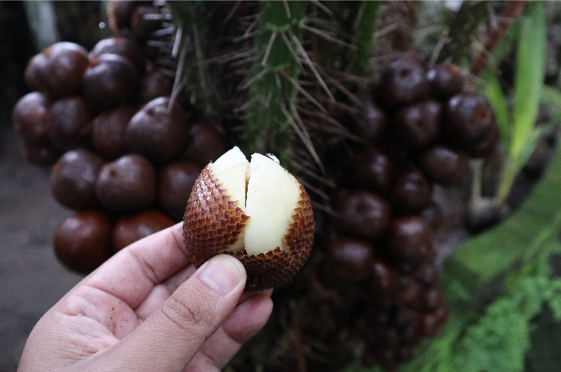

Pendahuluan
Salak, atau sering disebut sebagai "snake fruit" karena kulitnya yang bersisik, merupakan salah satu komoditas unggulan yang banyak dibudidayakan di Kabupaten Banjarnegara. Namun, budidaya salak seringkali terkendala oleh serangan Organisme Pengganggu Tumbuhan (OPT), salah satunya adalah lalat buah.
Serangan lalat buah dapat menurunkan kualitas hasil panen dan menyebabkan kerugian ekonomi yang signifikan. Oleh karena itu, metode pengelolaan yang lebih berkelanjutan dan ramah lingkungan diperlukan untuk menanggulangi hama ini.



 Buah pada Salak.png)
 Buah pada Salak1.png)
 Buah pada Salak2.png)
 Buah pada Salak3.png)
 Buah pada Salak4.png)
 Buah pada Salak5.png)
 Buah pada Salak6.png)
 Buah pada Salak7.png)
 Buah pada Salak8.png)
 Buah pada Salak9.png)